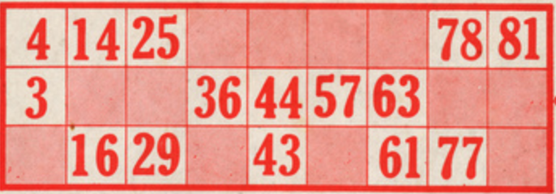

The Game of Bingo
In this tutorial, we will develop a simplified version of an internationally well known game - the Game of Bingo - that was created in the USA in 1929.
The game consists of a bowl of balls numbered from 1 to 99, which will be drawn sequentially.
Each player has one or more tickets with 15 numbers. These tickets have numbers in 3 rows and 9 columns.

Each row has 5 numbers, and each column will have one or two numbers, with the columns having the numbers for each of the 9 tens (1-9, 10-19, 20-29, 30-39, 40-49, 50-59, 60-69, 70-79, 80-90).
In this game we will only determine the winner who completes the card - Bingo! - ignoring the first to finish a line.
Given its simplicity, a text interface was chosen, which also simplifies the program's structure:
1. A function that creates the game tickets;
2. And another function that encapsulates the entire game.
1 Generating the tickets
This function creates a set of 15 unrepeated numbers. For this, the Set abstraction is used, as it avoids the occurrence of repeated numbers.
import random
# número de números em cada cartão
NUMEROS = 15
# preenche um cartao com 15 números diferentes
def preenche_cartao():
cartao = set()
while len(cartao) < NUMEROS:
cartao.add(random.randint(1,90))
return cartao
|
|
Note that this function uses a conditional
loop (while) instead of a counted loop (for)...
Hint: Study the function add in Sets... |
|
|
Repare
que, para simplificação, esta função não respeita uma das regras de criação
dos cartões:
Considere como desafio incluir esta regra... |
2 The game setup
The game of bingo is implemented with the function jogo(), that starts with the creation of the numbered balls from 1 a 90:
def jogo():
# cria o conjunto inicial de bolas a sortear
bolas = list(range(1,91))
Then a ticket is created for the human player and another ticket for the computer.
# cartão de cada jogador
cartaoHumano = preenche_cartao()
cartaoComputador = preenche_cartao()
numeros_ja_saidos = set()
And the print version of each ticket, which is an ordered list.
# versão de impressão
bilheteHumano = list(cartaoHumano)
bilheteHumano.sort()
bilheteComputador = list(cartaoComputador)
bilheteComputador.sort()
|
|
Why it will be necessary to create a list to sort the numbers? |
3 The game loop
The game cycle is repeated until the numbered balls are exhausted.
# inicialização
while len(bolas) > 0:
A number is drawn at each turn ... which is then added to the list of numbers that came out.
# retira número
if input("E roda a esfera...") == "end":
return
numero_sorteado = bolas.pop(random.randint(0, len(bolas)-1))
print (numero_sorteado)
numeros_ja_saidos.add(numero_sorteado)
Then it is calculated how many numbers are left on each player's card.
# mostra bilhete do jogador humano
nH = NUMEROS - len(cartaoHumano.intersection(numeros_ja_saidos))
print(bilheteHumano, "- faltam", nH)
nC = NUMEROS - len(cartaoComputador.intersection(numeros_ja_saidos))
print(bilheteComputador, "- faltam", nC)
|
|
To calculate the numbers that have already come out on each card, use the length of the set returned by the method intersection() of the Sets. This method calculates the number of numbers that are simultaneously on the player's card and the set of values that have already left. |
Finally, it is checked whether there is a winner... Bingo!
if nC == 0 and nH == 0:
print("Empate...")
break
elif nC == 0:
print("Bingo! Ganhou o computador.")
break
elif nH == 0:
print("Bingo! Ganhou o jogador humano.")
break
4 Final challenge
Evolve this version of the game to incorporate the card creation rules and the possibility of having multiple players, with multiple cards.
You can also develop a graphical version using the p5 module...
|
|
Share your game!
|